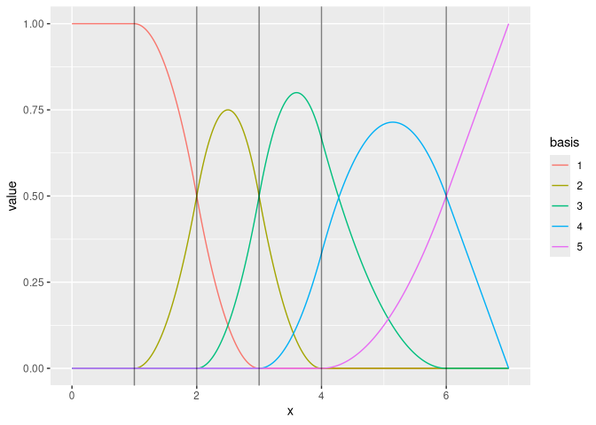

Generate planar and spherical triangle meshes, compute finite element calculations for 1- and 2-dimensional flat and curved manifolds with associated basis function spaces, methods for lines and polygons, and transparent handling of coordinate reference systems and coordinate transformation, including ‘sf’ and ‘sp’ geometries. The core ‘fmesher’ library code was originally part of the INLA package, and also distributed in the EUSTACE Horizon 2020 project, and implements parts of “Triangulations and Applications” by Hjelle and Dæhlen (2006). The expanded crs/CRS support started as an add-on feature of inlabru.
Installation
You can install the current CRAN version of fmesher:
install.packages("fmesher")You can install the latest stable release of fmesher from GitHub:
# install.packages("remotes")
remotes::install_github("inlabru-org/fmesher", ref = "stable")And the development version with:
# install.packages("remotes")
remotes::install_github("inlabru-org/fmesher")or track the development version builds via inlabru-org.r-universe.dev:
# Enable universe(s) by inlabru-org
options(repos = c(
inlabruorg = "https://inlabru-org.r-universe.dev",
INLA = "https://inla.r-inla-download.org/R/testing",
CRAN = "https://cloud.r-project.org"
))
install.packages("fmesher")To install and run fmesher in full debug mode (this is quite an experience!), use
# install.packages("pkgbuild")
source("https://raw.githubusercontent.com/inlabru-org/fmesher/devel/misc/build.R")
fmesher_install(repo = "inlabru-org/fmesher", debug = TRUE)Examples
2D triangular meshes
Includes a port of inla mesh inla.mesh.create (as fm_rcdt_2d_inla()) and inla.mesh.2d interfaces.
suppressPackageStartupMessages(library(fmesher))
suppressPackageStartupMessages(library(ggplot2))
(mesh <- fm_mesh_2d_inla(
boundary = fm_extensions(cbind(0, 0), convex = c(1, 1.5)),
max.edge = c(0.5, 1)
))
#> fm_mesh_2d object:
#> Manifold: R2
#> V / E / T: 57 / 152 / 96
#> Euler char.: 1
#> Constraints: 16 boundary edges (1 group: 1), 16 interior edges (1 group: 1)
#> Bounding box: (-1.499887, 1.499887) x (-1.499887, 1.499887)
#> Basis d.o.f.: 57
ggplot() +
geom_fm(data = mesh) +
theme_minimal()1D B-spline function spaces
(mesh <- fm_mesh_1d(c(1, 2, 3, 4, 6),
boundary = c("neumann", "free"),
degree = 2
))
#> fm_mesh_1d object:
#> Manifold: R1
#> #{knots}: 5
#> Interval: (1, 6)
#> Boundary: (neumann, free)
#> B-spline degree: 2
#> Basis d.o.f.: 5
Extended helper methods for CRS handling
The package provides methods fm_crs() and fm_CRS() for extracting CRS information from sf and sp objects and automatically converts to the desired output format. The fm_transform() wrapper similarly handles a variety of objects, as well as special handling for converting between spheres and globes of different radii, e.g. used to map between the Earth and a unit radius sphere uses as a model of the Earth.
# longlat for a spherical version of the Earth
print(fm_crs("longlat_globe"))
#> Coordinate Reference System:
#> User input: +proj=longlat +ellps=sphere +no_defs
#> wkt:
#> GEOGCRS["unknown",
#> DATUM["Unknown based on Normal Sphere (r=6370997) ellipsoid",
#> ELLIPSOID["Normal Sphere (r=6370997)",6370997,0,
#> LENGTHUNIT["metre",1,
#> ID["EPSG",9001]]]],
#> PRIMEM["Greenwich",0,
#> ANGLEUNIT["degree",0.0174532925199433],
#> ID["EPSG",8901]],
#> CS[ellipsoidal,2],
#> AXIS["longitude",east,
#> ORDER[1],
#> ANGLEUNIT["degree",0.0174532925199433,
#> ID["EPSG",9122]]],
#> AXIS["latitude",north,
#> ORDER[2],
#> ANGLEUNIT["degree",0.0174532925199433,
#> ID["EPSG",9122]]]]
# longlat for a sphere of radius 1m
print(fm_crs("longlat_norm"))
#> Coordinate Reference System:
#> User input: +proj=longlat +R=1 +no_defs
#> wkt:
#> GEOGCRS["unknown",
#> DATUM["unknown",
#> ELLIPSOID["unknown",1,0,
#> LENGTHUNIT["metre",1,
#> ID["EPSG",9001]]]],
#> PRIMEM["Reference meridian",0,
#> ANGLEUNIT["degree",0.0174532925199433,
#> ID["EPSG",9122]]],
#> CS[ellipsoidal,2],
#> AXIS["longitude",east,
#> ORDER[1],
#> ANGLEUNIT["degree",0.0174532925199433,
#> ID["EPSG",9122]]],
#> AXIS["latitude",north,
#> ORDER[2],
#> ANGLEUNIT["degree",0.0174532925199433,
#> ID["EPSG",9122]]]]
# A sphere of radius 1m
print(fm_crs("sphere"))
#> Coordinate Reference System:
#> User input: +proj=geocent +R=1 +units=m +no_defs
#> wkt:
#> GEODCRS["unknown",
#> DATUM["unknown",
#> ELLIPSOID["unknown",1,0,
#> LENGTHUNIT["metre",1,
#> ID["EPSG",9001]]]],
#> PRIMEM["Reference meridian",0,
#> ANGLEUNIT["degree",0.0174532925199433,
#> ID["EPSG",9122]]],
#> CS[Cartesian,3],
#> AXIS["(X)",geocentricX,
#> ORDER[1],
#> LENGTHUNIT["metre",1,
#> ID["EPSG",9001]]],
#> AXIS["(Y)",geocentricY,
#> ORDER[2],
#> LENGTHUNIT["metre",1,
#> ID["EPSG",9001]]],
#> AXIS["(Z)",geocentricZ,
#> ORDER[3],
#> LENGTHUNIT["metre",1,
#> ID["EPSG",9001]]]]